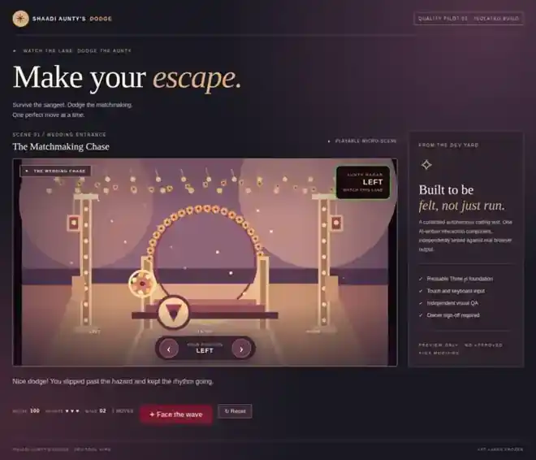
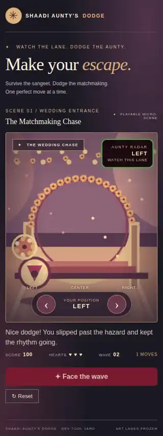

Dev Tool Yard · Independent QA · Owner review
Aunty's Dodge — playable preview.
Open the game directly in your mobile browser. This version demonstrates a reusable Three.js wedding-entrance mini-scene with keyboard and touch movement, Aunty Radar, hazards, hearts and scoring.
36/36Browser checks
8/8Brand styling checks
1Model generation
0Code retries
Approval pending. This is an isolated, synthetic test scene, not the full game or its approved character models. Both Shaadi production art lanes are frozen. Publishing this preview does not merge or release any production changes.
QA browser screenshots
Desktop


Mobile


Three.js 0.186.1 is loaded from the version-pinned jsDelivr CDN. This public, unlisted staging link is not access-controlled. No PINs, browser sessions, source repositories' secrets or live game data are included.